Galeria E2E — auditoria 01-02/10/2026
Varredura de rotas — 41/41 sem erro
 /inicio/visao-geral
/inicio/visao-geral /inicio/setores
/inicio/setores /inicio/alertas
/inicio/alertas /inicio/metas
/inicio/metas /inicio/pausas
/inicio/pausas /inicio/crachas
/inicio/crachas /inicio/chamadas
/inicio/chamadas /inicio/chamadas-dev
/inicio/chamadas-dev /inicio/turnos
/inicio/turnos /inicio/sistema
/inicio/sistema /inicio/cadastro
/inicio/cadastro /inicio/ia
/inicio/ia /consulta-operacional/visao-geral
/consulta-operacional/visao-geral /consulta-operacional/recursos
/consulta-operacional/recursos /consulta-operacional/ops-em-andamento
/consulta-operacional/ops-em-andamento /consulta-operacional/tempo-mes
/consulta-operacional/tempo-mes /producao/ordens
/producao/ordens /producao/realizada
/producao/realizada /producao/planejado-realizado
/producao/planejado-realizado /analises/oee
/analises/oee /analises/horas-utilizacao
/analises/horas-utilizacao /analises/paradas
/analises/paradas /analises/qualidade
/analises/qualidade /analises/tempo-padrao-real
/analises/tempo-padrao-real /analises/cronoanalise
/analises/cronoanalise /analises/capacidade-gargalos
/analises/capacidade-gargalos /analises/confiabilidade
/analises/confiabilidade /auditoria/apontamentos
/auditoria/apontamentos /auditoria/inconsistencias
/auditoria/inconsistencias /auditoria/confiabilidade
/auditoria/confiabilidade /relatorios/gerencial
/relatorios/gerencial /relatorios/producao
/relatorios/producao /relatorios/perdas
/relatorios/perdas /relatorios/indicadores
/relatorios/indicadores /relatorios/dados-analiticos
/relatorios/dados-analiticos /rastreabilidade/op-produto
/rastreabilidade/op-produto /rastreabilidade/linha-do-tempo
/rastreabilidade/linha-do-tempo /rastreabilidade/lote-material-nesting
/rastreabilidade/lote-material-nesting /andon
/andon /welding-management
/welding-management /operador
/operadorFluxo: Operador Dobra (1303) — 9 passos
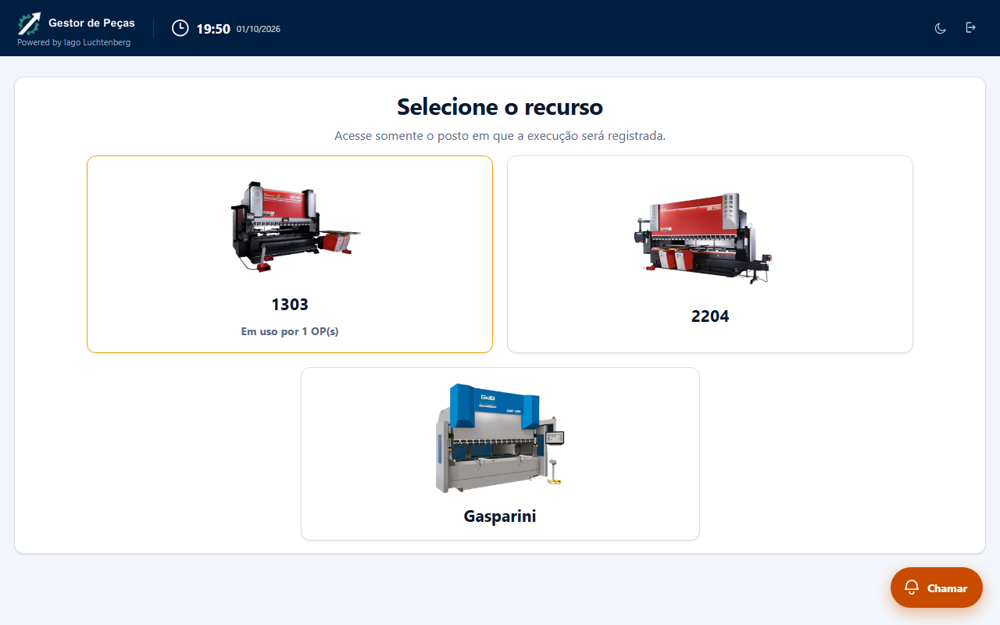
01 1 portal lista os recursos da Dobra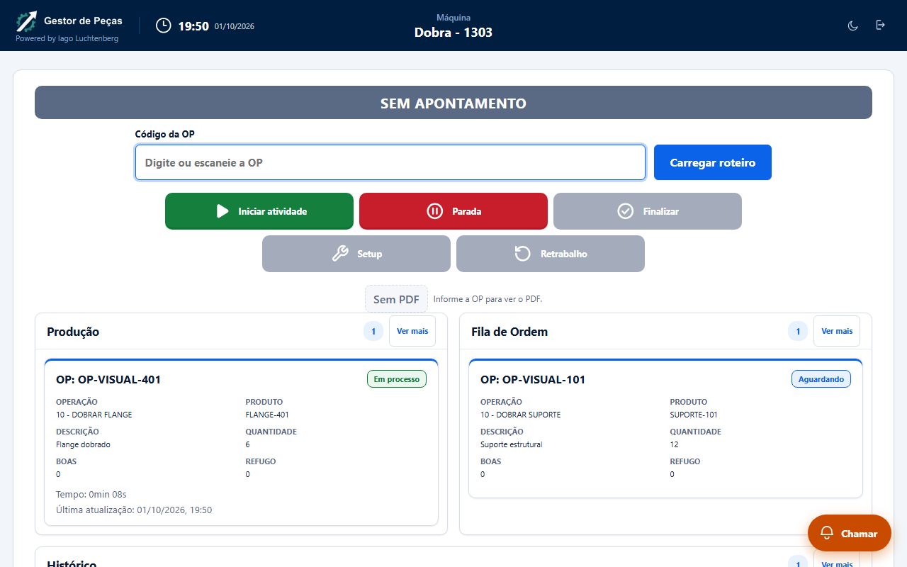
02 2 recurso abre com a máquina e sem apont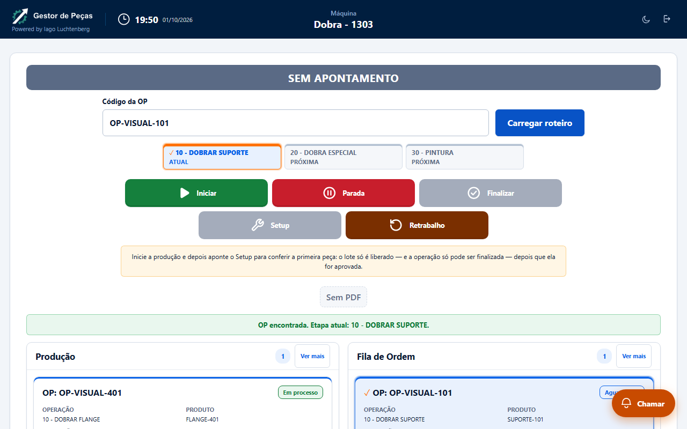
03 3 roteiro da OP carrega com as etapas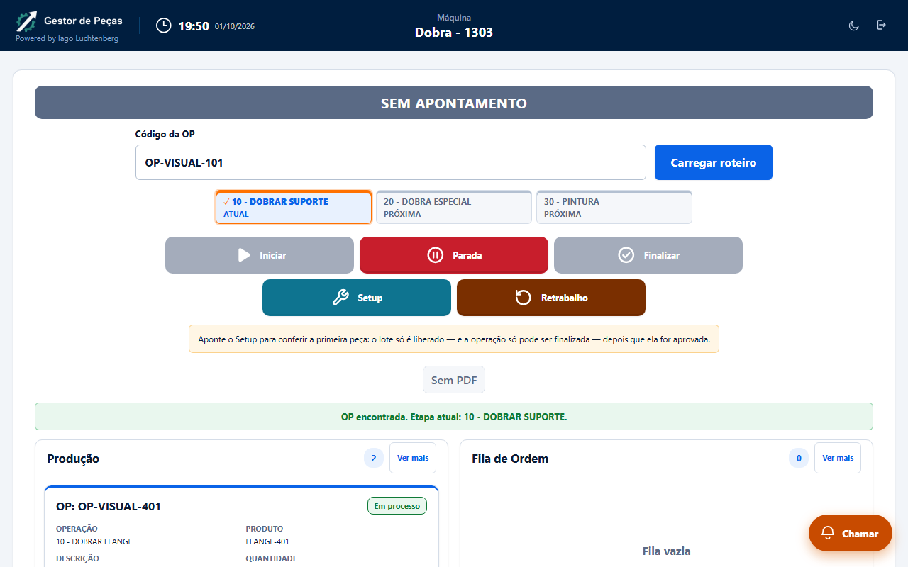
04 4 iniciar libera a conferência da primei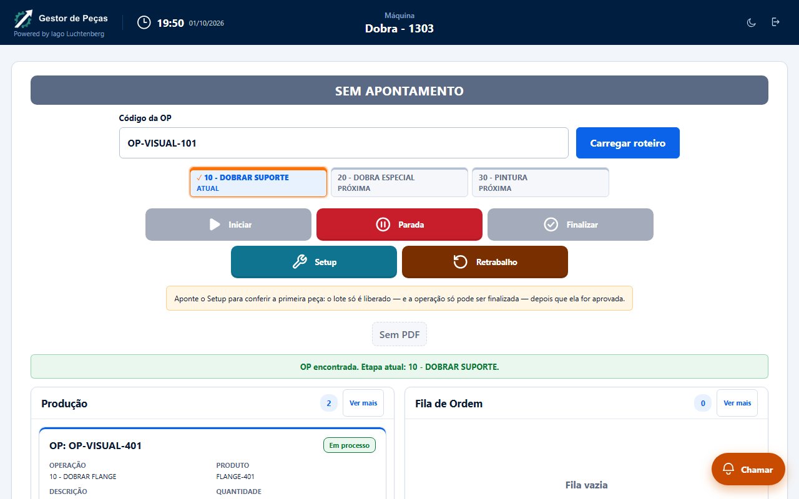
05 5 múltiplas ordens duas OPs em produção 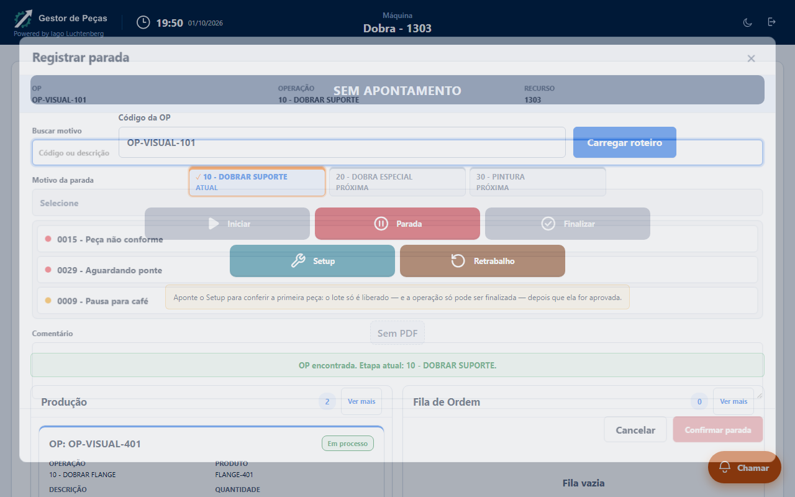
06 6 parada abre motivos oficiais com códig 07 7 parada confirmada fecha o diálogo
07 7 parada confirmada fecha o diálogo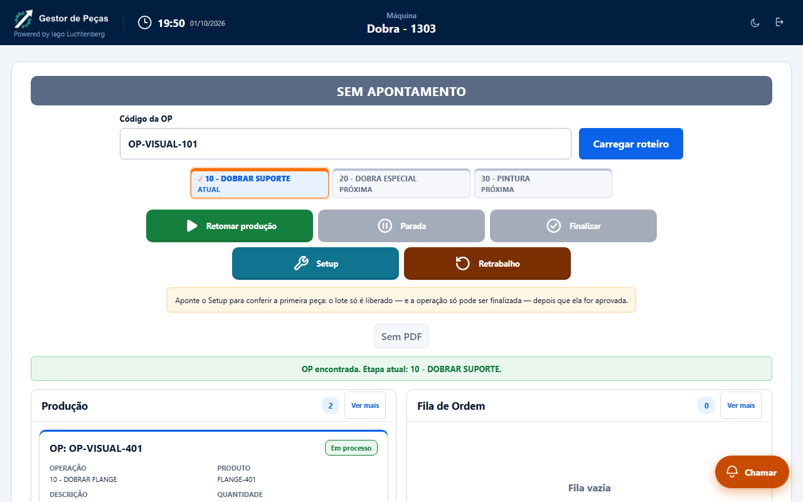
08 8 retorno botão vira Retomar produção 09 9 retomada ativa a Parada de novo e a te
09 9 retomada ativa a Parada de novo e a teFluxo: Destaque — 5 passos
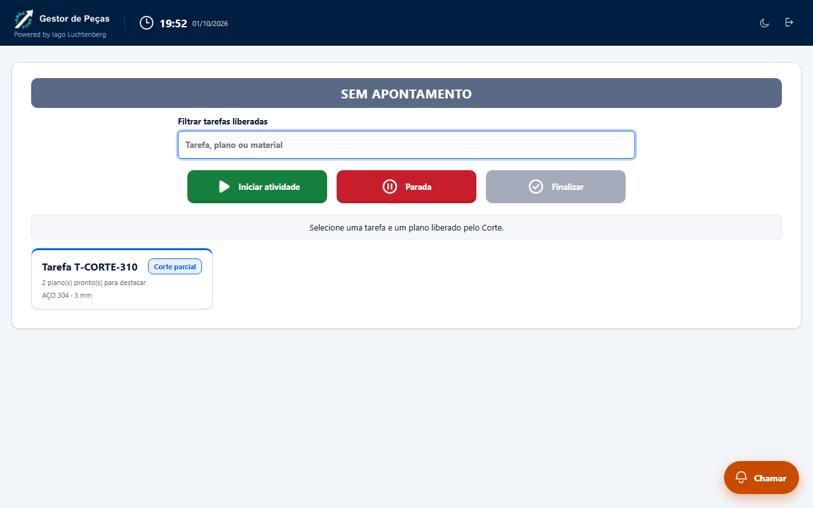
01 1 fila do Destaque lista a tarefa libera02 2 selecionar mostra a tarefa e a escolha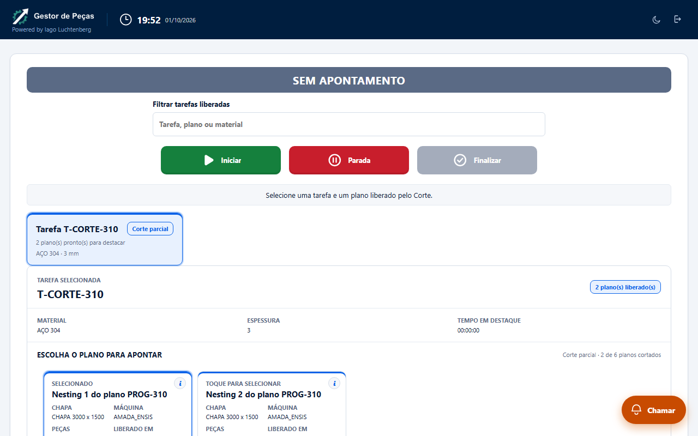
03 3 Parada segue disponível com a tarefa s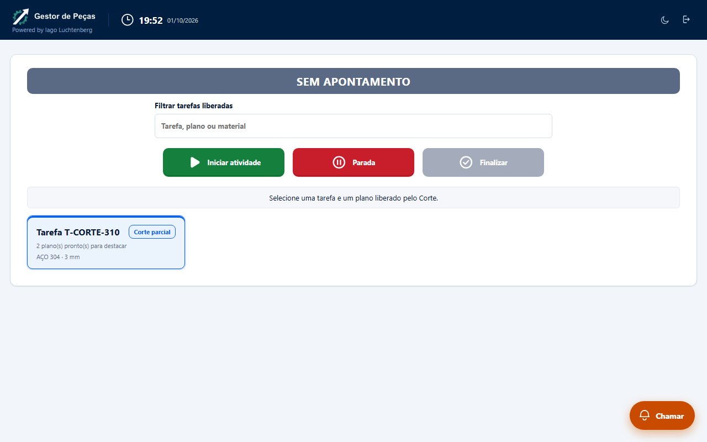
04 4 clicar de novo desseleciona e recolhe 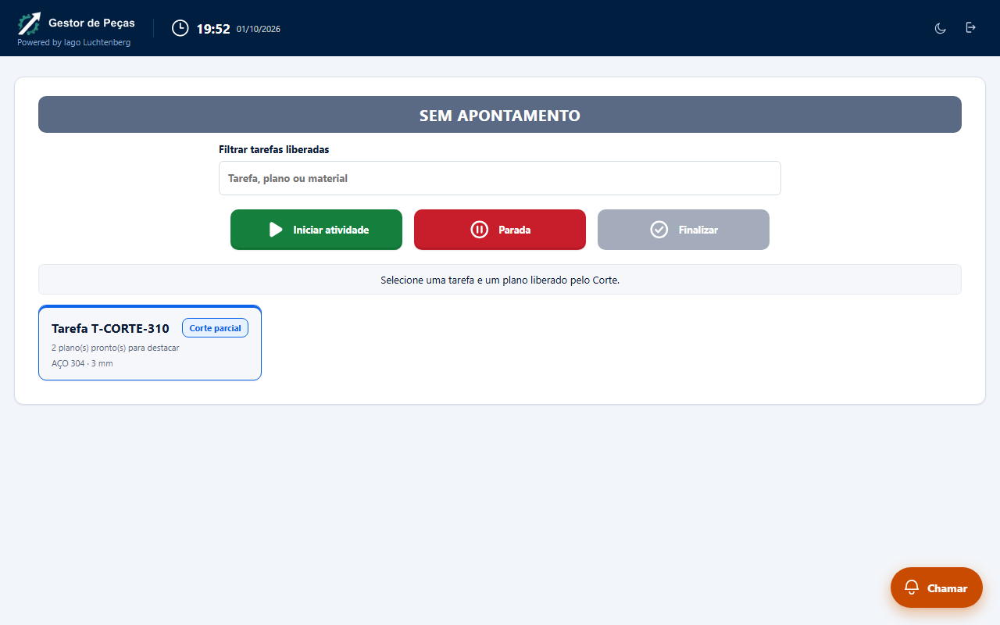
05 5 após desselecionar a Parada continua dFluxo: Portão Setup/Qualidade — 7 passos
01 1 após iniciar a tela explica que o lote 02 2 Finalizar fica bloqueado até a primeir
02 2 Finalizar fica bloqueado até a primeir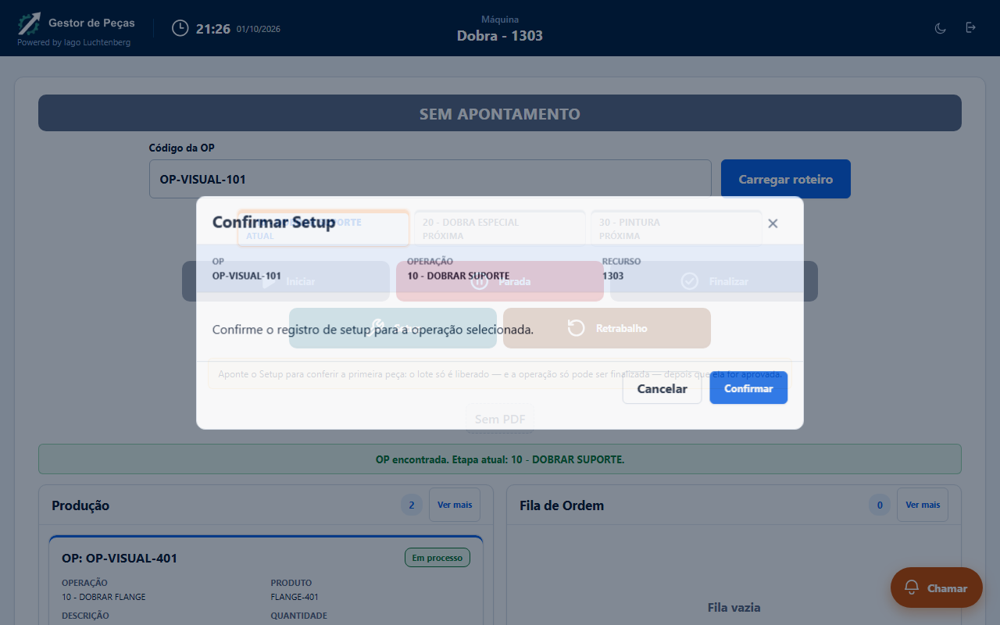
03 3 Setup abre confirmação com OP operação 04 4 cancelar fecha o diálogo e Finalizar c
04 4 cancelar fecha o diálogo e Finalizar c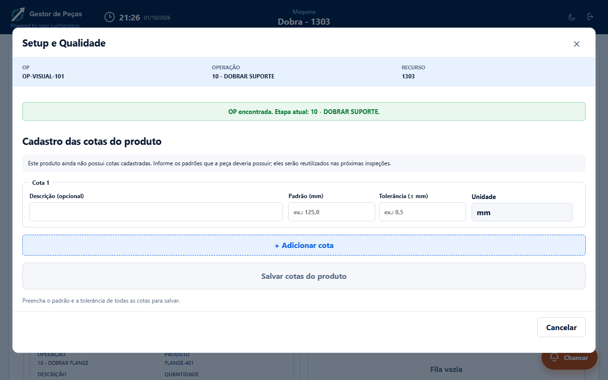
05 5 produto sem cotas o Setup abre o cadas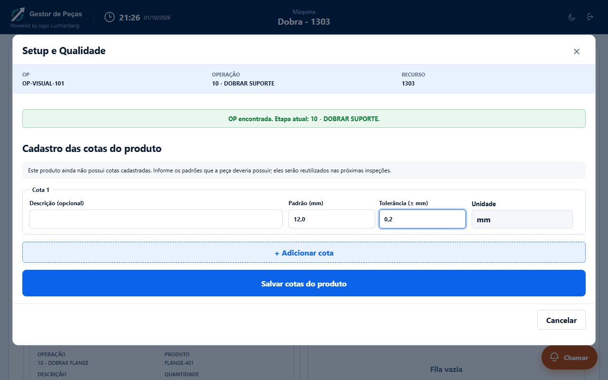
06 6 preenchendo padrão e tolerância Salvar07 7 cancelar o cadastro fecha o diálogo e Caminhada aleatória (relatório da última execução)
| perfil | semente | passos | controles distintos | violações |
|---|
| corte | 1 | 120 | 65 | 0 |
| corte | 2 | 120 | 66 | 0 |
| corte | 3 | 120 | 50 | 0 |
| solda | 1 | 120 | 54 | 0 |
| solda | 2 | 120 | 50 | 0 |
| solda | 3 | 120 | 55 | 0 |